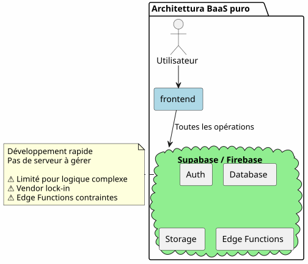
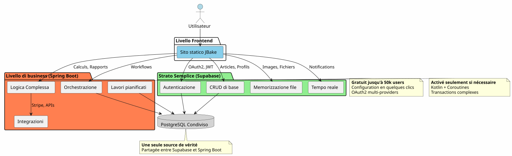
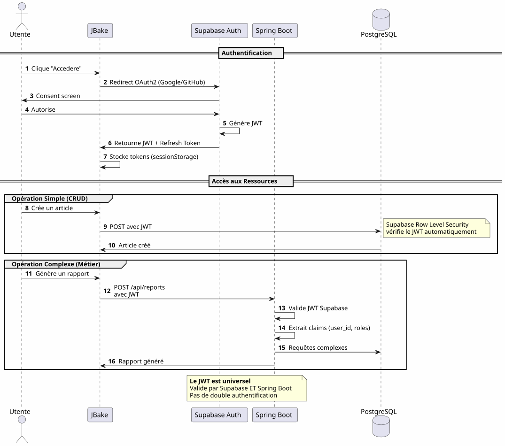
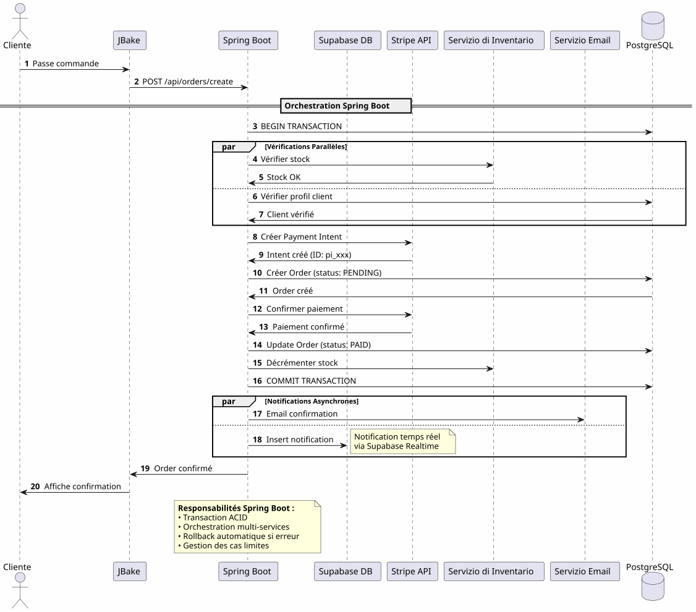
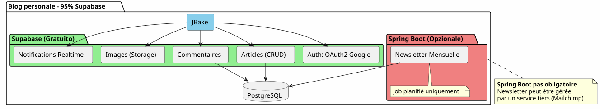

Architettura Ibrida : Il meglio dei due mondi con Supabase e Spring Boot
Publié le 14 January 2026
Perché scegliere tra la semplicità di Supabase e la potenza di Spring Boot? Perché non combinare i due? Scopri un’architettura ibrida che sfrutta il meglio di ogni tecnologia.
- tic
-
[]
Il falso dilemma dell’architettura moderna
Quando si costruisce un’applicazione moderna con un frontend statico, ci si trova spesso di fronte a una scelta binaria :
-
Puntare tutto su una soluzione Backend-as-a-Service(Supabase, Firebase) - semplice ma limitata
-
Costruire un backend completo(Spring Boot, Node.js) - potente ma complesso
Questa scelta è un falso dilemma. L’architettura ibrida propone una terza via: utilizzare ogni tecnologia dove eccelle.
Vision architettonica
L’architettura tradizionale : monolitica
In questo approccio, anche le operazioni più semplici (lettura di un articolo, creazione di un commento) devono passare attraverso il tuo backend. Paghi il costo della complessità fin dal primo giorno.
L’architettura BaaS: Ogni delegato

Al contrario, delegare tutto a un BaaS è allettante inizialmente, ma mostra rapidamente i suoi limiti non appena la logica di business si complica.
L’Architettura Ibrida: Separazione delle Responsabilità

L’architettura ibrida separa chiaramente le responsabilità in base alla complessità e alla natura delle operazioni.
Principi di progettazione
Principio 1: Iniziare Semplice, Evolvere Intelligentemente
Failed to generate image: PlantUML preprocessing failed: [From <input> (line 23) ]
@startuml
skinparam backgroundColor #FEFEFE
rectangle "**Fase 1 : MVP**" #LightGreen {
component "JBake + Supabase" as mvp
note right
✓ Développement en jours
✓ Coût : 0€
✓ Validation concept
end note
}
rectangle "Fase 2 : Crescita" #LightYellow {
component "JBake + Supabase\n+ Spring Boot (opzionale)" as growth
note right
✓ Logique métier émerge
✓ Premiers jobs planifiés
✓ Intégrations tierces
end note
}
rectangle "**Fase 3 : Scala**" #LightCoral {
component "</think>
^^^^^
Syntax Error? (Assumed diagram type: component)
@startuml
skinparam backgroundColor #FEFEFE
rectangle "**Fase 1 : MVP**" #LightGreen {
component "JBake + Supabase" as mvp
note right
✓ Développement en jours
✓ Coût : 0€
✓ Validation concept
end note
}
rectangle "Fase 2 : Crescita" #LightYellow {
component "JBake + Supabase\n+ Spring Boot (opzionale)" as growth
note right
✓ Logique métier émerge
✓ Premiers jobs planifiés
✓ Intégrations tierces
end note
}
rectangle "**Fase 3 : Scala**" #LightCoral {
component "</think>
Architettura completa" as scale
note right
✓ Orchestration complexe
✓ Performances optimisées
✓ Cache distribué
end note
}
mvp -down-> growth : Quand la complexité\nle justifie
growth -down-> scale : Optimisation\ncontinue
@enduml
Non costruire Spring Boot se non ne hai bisogno.Iniziate con Supabase, aggiungiete Spring Boot quando la complessità lo giustifica.
Principio 2: Separazione per natura dell’operazione

Principio 3: Una sola fonte di verità
Condividendo la stessa istanza PostgreSQL, Supabase e Spring Boot lavorano sugli stessi dati senza una sincronizzazione complessa.
Orchestrazione dei flussi
Flusso 1: Autenticazione Centralizzata

Punto chiaveUn solo processo di autenticazione, un solo JWT, utilizzabile ovunque.
Flusso 2: Orchestrazione di un Processo Aziendale Complesso

Cosa porta Spring Boot: Orchestrazione affidabile di processi complessi che coinvolgono più sistemi con garanzia transazionale.
Flusso 3 : Lavori pianificati e sincronizzazioni
Failed to generate image: PlantUML preprocessing failed: [From <input> (line 4) ] @startuml skinparam backgroundColor #FEFEFE participant "Scheduler ^^^^^ Syntax Error? (Assumed diagram type: sequence) @startuml skinparam backgroundColor #FEFEFE participant "Scheduler (Spring Boot)" as scheduler participant "Servizio di report" as report participant "PostgreSQL" as db participant "API esterna" as api participant "Servizio email" as email participant "Archiviazione Supabase" as storage == Job Quotidien : 2h00 == activate scheduler scheduler -> report : Déclenche génération rapport activate report report -> db : Récupère données\ndes dernières 24h db -> report : Dataset report -> report : Calculs & Agrégations report -> report : Génération PDF report -> storage : Upload PDF storage -> report : URL publique report -> email : Envoie aux admins\navec lien PDF deactivate report == Job Hebdomadaire : Dimanche 3h00 == scheduler -> report : Synchronisation externe activate report report -> api : Fetch données externes api -> report : Nouvelles données report -> db : Mise à jour tables report -> db : Nettoyage données obsolètes deactivate report == Job Mensuel : 1er du mois == scheduler -> report : Facturation activate report report -> db : Liste clients actifs report -> report : Calcul montants report -> api : Génération factures (Stripe) report -> email : Envoi factures deactivate report deactivate scheduler note right of scheduler **Impossible avec Supabase seul** Edge Functions non adaptées pour jobs longs et récurrents end note @enduml
Ciò che Spring Boot porta: Lavori pianificati affidabili con gestione dello stato, retry automatico e esecuzione garantita.
Matrice di decisione
Quando utilizzare Supabase?

Quando usare Spring Boot?

Esempi di Architettura per Tipo di Progetto
Blog / Portfolio

Verdetto: 100% Supabase basta ampiamente.
Applicazione SaaS
verdetto: Architettura ibrida necessaria. Supabase per l’essenziale, Spring Boot per la parte critica (pagamenti, fatturazione).
e-commerce
Verdetto: Spring Boot indispensabile. Supabase solo per auth e catalogo.
Strategia di migrazione progressiva

Costi e Considerazioni Operative
Struttura dei costi
Failed to generate image: PlantUML preprocessing failed: [From <input> (line 7) ]
@startuml
skinparam backgroundColor #FEFEFE
package "Costi Mensili Stimati" {
rectangle "Fase MVP
(0-1000 users)" #LightGreen {
^^^^^
Syntax Error? (Assumed diagram type: activity)
@startuml
skinparam backgroundColor #FEFEFE
package "Costi Mensili Stimati" {
rectangle "Fase MVP
(0-1000 users)" #LightGreen {
[JBake (GitHub Pages): 0€]
[Supabase: 0€]
[Spring Boot: N/A]
note bottom: **Total: 0€/mois**
}
rectangle "Fase Crescita
(1k-10k utenti)" #LightYellow {
[JBake (GitHub Pages): 0€]
[Supabase: 0€]
[Spring Boot (Cloud Run): 20-50€]
[PostgreSQL (si séparé): 0-30€]
note bottom: **Total: 20-80€/mois**
}
rectangle "Scala di fase
(10k-100k utenti)" #LightCoral {
[JBake (Netlify Pro): 19€]
[Supabase Pro: 25€]
[Spring Boot (instances multiples): 100-300€]
[Redis Cache: 20-50€]
[Monitoring: 20€]
note bottom: **Total: 184-414€/mois**
}
}
note right of "Scala di fase
(10k-100k utenti)"
À ce stade, les revenus
justifient largement les coûts
end note
@enduml
Responsabilità Operative
Conclusion: L’equilibrio perfetto
L’architettura ibrida Supabase + Spring Boot non è un compromesso, è unasinergia.
I principi da ricordare

Quando scegliere questa architettura?
✅ Questa architettura è ideale se :
-
Vuoi partire rapidamente (MVP in giorni, non in mesi)
-
Lei anticipa una crescita della complessità aziendale
-
Vuoi minimizzare i costi iniziali
-
Ti piace PostgreSQL e vuoi una fonte unica di verità
-
Apprezzi Kotlin e le Coroutine per il codice di business
-
Vuoi evitare il vendor lock-in totale
❌ Questa architettura NON è adatta se:
-
Il tuo progetto è semplice e rimarrà tale (blog personale → il 100% di Supabase basta)
-
Hai già una stack backend consolidata che padroneggi
-
Preferisci un monolite tradizionale
-
Hai bisogno di .NET, Python o altro linguaggio lato backend
Visione d’insieme finale
Il meglio dei due mondi
Questa architettura ti dà:
�🚀 La velocità di Supabase
-
Avvio in ore, non in settimane
-
Autenticazione OAuth2 in pochi clic
-
API REST generate automaticamente
-
Zero configurazione del server
�💪 La potenza di Spring Boot
-
Kotlin e Coroutine per codice asincrono elegante
-
Orchestrazione di processi aziendali complessi
-
Lavori pianificati affidabili
-
Transazioni ACID garantite
-
Ecosistema Spring completo
�💰 L’Economia Progressiva
-
0€ per avviare e confermare
-
Costi che seguono la crescita
-
Nessun sovradimensionamento prematuro
�🎯 La Flessibilità Architettonica
-
Migrazione progressiva senza rifacimento
-
Aggiunta di Spring Boot solo se necessario
-
Nessun vendor lock-in totale
-
Architettura evolutiva
Per andare più lontano
Risorse Tecniche
Documentazione Supabase :
Documentazione Spring Boot :
-
https://spring.io/guides/tutorials/spring-boot-kotlin/[# Integrazione Gradle
JBake può essere integrato nelle build Gradle utilizzando il plugin JBake per Gradle o chiamando direttamente la CLI di JBake:
----
tasks.register<JavaExec>("bake") {
mainClass.set("org.jbake.launcher.Main")
classpath = configurations["jbake"]
args = listOf(projectDir.absolutePath, "$buildDir/jbake")
}]
* https://spring.io/blog/2019/04/12/going-reactive-with-spring-coroutines-and-kotlin-flow[Coroutines e Spring]
* https://docs.spring.io/spring-security/reference/servlet/oauth2/resource-server/jwt.html[Server di risorse JWT]
**Articoli complementari :**
* Sicurezza delle API con JWT
* Ottimizzazione delle prestazioni PostgreSQL
* Modelli di migrazione progressiva
* Gestione degli errori in architettura distribuita
=== Casi d'uso reali
Questa architettura ibrida viene utilizzata con successo in :
* **SaaS B2B**: Autenticazione Supabase, fatturazione Spring Boot
* **Mercati**: Catalogo Supabase, transazioni Spring Boot
* **Piattaforme di contenuto**: Articoli Supabase, analytics Spring Boot
* **Strumenti interni**: CRUD Supabase, flussi di lavoro Spring Boot
=== Lista di controllo per l'avvio
**Fase 1 - Fondazioni (Settimana 1)**
- [ ] Crea account Supabase - [ ] Configurare progetto PostgreSQL - [ ] Attiva Auth (Google, GitHub) - [ ] Définir schéma initial - [ ] Configurare Row Level Security - [ ] Testare le API da JBake
**Fase 2 - MVP (Settimana 2-3)**
- [ ] Implementare le pagine principali - [ ] Integrare l'autenticazione OAuth2 - [ ] Creare moduli CRUD - [ ] Configurare Storage per file - [ ] Déployer sur GitHub Pages - [ ] Testare in condizioni reali
**Fase 3 - Evoluzione (secondo le esigenze)**
- [ ] Identificare esigenze di logica complessa - [ ] Creare progetto Spring Boot se necessario - [ ] Configurare la validazione JWT Supabase - [ ] Connettiti a PostgreSQL Supabase - [ ] Migrare le funzionalità complesse - [ ] Implementare i job pianificati - [ ] Distribuire Spring Boot (Cloud Run, ecc.)
=== Anti-Patterns da evitare
**❌ Non fare :**
* Duplicare i dati tra Supabase e Spring Boot
* Creare due basi PostgreSQL separate
* Codifica l'autenticazione da te
* Utilizzare Spring Boot per un CRUD semplice
* Sovra-architettare fin dall'inizio
* Ignora Row Level Security di Supabase
**Fare piuttosto :**
* Condividere un solo database PostgreSQL
* Lascia che Supabase gestisca l'autenticazione
* Utilizzare Spring Boot solo per la complessità
* Iniziare semplice, evolvere gradualmente
* Sfrutta i punti di forza di ogni tecnologia
* Proteggere con RLS a livello di database
== Prospettive di Evoluzione
=== Aggiunta di nuove capacità
[plantuml,future-capabilities,svg]
----
@startuml
skinparam backgroundColor #FEFEFE
rectangle "Architettura attuale" #SkyBlue {
[JBake]
[Supabase]
[Spring Boot]
}
rectangle "Evoluzioni Possibili" #LightYellow {
package "prestazione" {
[Redis Cache]
[CDN pour Assets]
[PostgreSQL Replicas]
}
package "Monitoraggio" {
[Grafana]
[Prometheus]
[Sentry]
}
package "CI/CD" {
[GitHub Actions]
[Tests Automatisés]
[Déploiement Continu]
}
package "funzionalità" {
[Search (ElasticSearch)]
[Queue (RabbitMQ)]
[Event Sourcing]
}
}
[Spring Boot] .down.> [Redis Cache] : Peut ajouter
[Spring Boot] .down.> [Queue (RabbitMQ)] : Peut ajouter
[Spring Boot] .down.> [Search (ElasticSearch)] : Peut ajouter
[Supabase] .down.> [PostgreSQL Replicas] : Peut ajouter
note bottom
**Architecture extensible**
Chaque ajout est indépendant
Pas de refonte globale nécessaire
end note
@enduml
----
=== Scaling orizzontale
Quando la tua applicazione cresce, l'architettura ibrida si scala naturalmente:
**Supabase :**
* Scale automaticamente fino a milioni di operazioni
* Repliche di lettura per prestazioni di lettura
* Recupero point-in-time per la sicurezza
**Spring Boot:**
* Multiple istanze dietro il load balancer
* Il design stateless facilita lo scaling orizzontale
* Kubernetes per orchestrazione se necessario
**PostgreSQL:**
* Partizionamento per tabelle voluminose
* Connection pooling (PgBouncer)
* Sharding è davvero necessario (raro)
== Testimonianze architettoniche
=== Startup SaaS (50k utenti)
____ Abbiamo iniziato al 100% con Supabase. A 5k utenti, abbiamo aggiunto Spring Boot solo per la fatturazione Stripe e i rapporti mensili. Un anno dopo, l'80% delle nostre operazioni passa ancora tramite Supabase. Spring Boot gestisce solo la parte critica. Questa separazione ci ha permesso di scalare senza rifacimento. (No output)
=== Piattaforma E-learning (10k utenti)
____ L'autenticazione OAuth2 di Supabase ci ha fatto risparmiare tre settimane di sviluppo. Le API auto-generate gestiscono tutto il nostro catalogo di corsi. Spring Boot serve solo per i certificati PDF e le email di avanzamento. Architettura semplice, manutenibile, evolutiva. ____
=== Marketplace B2B (3k utenti)
(blank) Spring Boot gestisce le transazioni tra acquirenti e venditori (critico). Supabase gestisce tutto il resto: profili, messaggistica in tempo reale, documenti. Il fatto che condividano lo stesso database PostgreSQL ci evita qualsiasi sincronizzazione complessa. La migliore scelta architettonica che abbiamo fatto. ____
== Sintesi : Un Paradigma Architettonico Moderno
L'architettura ibrida Supabase + Spring Boot rappresenta un nuovo paradigma :**la specializzazione architettonica**.
[plantuml,paradigm-shift,svg]
----
@startuml
skinparam backgroundColor #FEFEFE
rectangle "Antico Paradigma" #LightCoral {
card "Tutto nel Backend" {
[Auth]
[CRUD]
[Logique Métier]
[Jobs]
[Storage]
[Realtime]
}
note bottom
Complexité maximale
dès le jour 1
end note
}
rectangle "Nuovo Paradigma" #LightGreen {
card "Supabase\n(Comodità)" {
[Auth]
[CRUD Simple]
[Storage]
[Realtime]
}
card "Spring Boot
(Differenziazione)" {
[Logique Métier]
[Jobs]
[Intégrations]
}
note bottom
Complexité progressive
ajoutée seulement si nécessaire
end note
}
[Ancien Paradigme] -right-> [Nouveau Paradigme] : Évolution
@enduml
----
**Il principio fondamentale :**Non costruire ciò che esiste già sotto forma di servizio. Concentrati su ciò che differenzia la tua applicazione.
=== La regola del 80/20
Nella maggior parte delle applicazioni:
* **80% delle operazioni**sono CRUD standard → Supabase
* **20% delle operazioni**necessitano della logica di business → Spring Boot
Questa regola naturale giustifica l'architettura ibrida.
[plantuml,8020-rule,svg]
----
@startuml
skinparam backgroundColor #FEFEFE
package "Distribuzione delle Operazioni" {
rectangle "80% - Operazioni standard" #LightGreen {
[Lecture de données]
[Création d'entités]
[Mise à jour simple]
[Suppression]
[Upload fichiers]
[Authentification]
note bottom: **Géré par Supabase**
}
rectangle "20% - Logica di business" #Coral {
[Calculs complexes]
[Workflows multi-étapes]
[Transactions critiques]
[Intégrations tierces]
[Jobs planifiés]
note bottom: **Géré par Spring Boot**
}
}
note right
**Focus optimal :**
Votre temps de développement
concentré sur les 20% qui
différencient votre produit
end note
@enduml
----
== Conclusione Finale
L'architettura ibrida non è un compromesso tecnico, è una**decisione strategica**.
**Ti permette di:**
* �✅ Avviare rapidamente con un MVP funzionante
* ✅ Convalidare il tuo mercato senza un investimento pesante
* Evolvere gradualmente quando la complessità lo richiede
* �✅ Controllare i tuoi costi in ogni fase
* �✅ Sfruttare il meglio di ogni tecnologia
* Evitare la sovraprogettazione prematura
* �✅ Conservare la flessibilità per il futuro
**Rappresenta:**
* (No output)**Pragmatismo**Ogni tecnologia in cui eccelle
* �🚀**Velocità**: time-to-market minimo
* �💰**Economia**Costi allineati al valore
* �🔮**Scalabilità**: Architecture che cresce con te
* �🛡️**Robustezza**: Servizi testati e affidabili
=== Il tuo prossimo passo
Se questa architettura ti parla, ecco da dove iniziare :
1. **Crea un account Supabase**(gratuito)
2. **Definisci il tuo schema di dati minimo**
3. **Configura l'autenticazione OAuth2**
4. **Create la tua prima pagina JBake che consuma l'API**
5. **Distribuite su GitHub Pages**
Avrai un MVP funzionante in**alcuni giorni**.
Spring Boot arriverà naturalmente quando ne avrai bisogno. Non prima.
---
**L'architettura ibrida è l'arte di costruire esattamente ciò che serve, quando serve.**
_Buon sviluppo ! 🚀_
---
_Condividi questo articolo se pensi che possa aiutare altri sviluppatori a fare le scelte architetturali giuste._
----Articoli correlati
14 May 2026